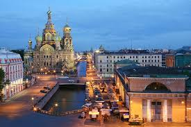
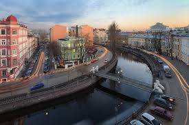
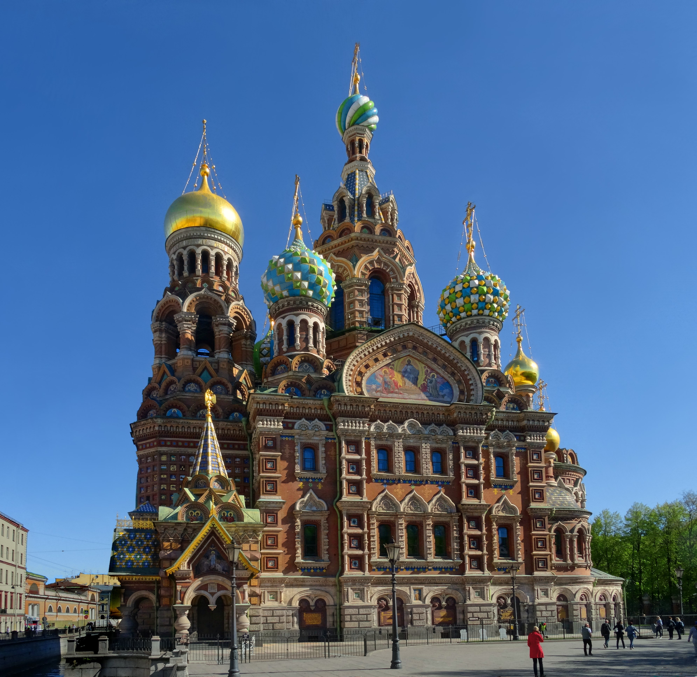
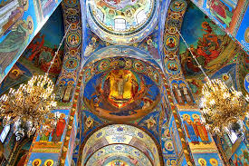
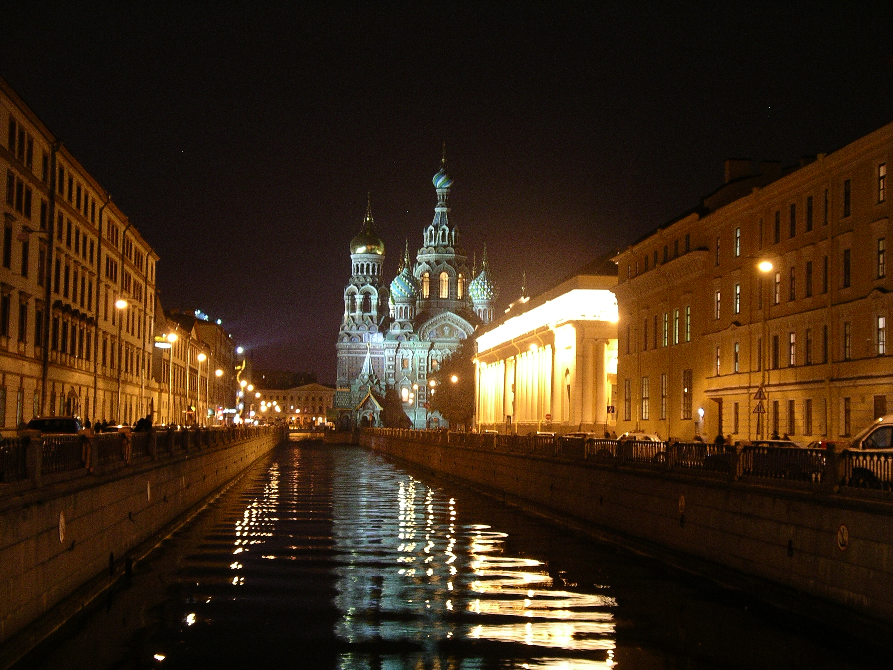

The Church of the Saviour on Spilled Blood is one of Saint Petersburg's most spectacular landmarks, rising dramatically above the Griboedov Canal. Built on the exact site where Emperor Alexander II was mortally wounded in 1881, the church is a masterpiece of Russian Revival architecture and houses one of the largest mosaic collections in the world.
Construction began in 1883 under Alexander III as a memorial to his assassinated father and was completed in 1907 during Nicholas II's reign. The church was built over the cobblestones stained with the emperor's blood, incorporating that very section of the canal embankment into its interior. During the Soviet era it was used as a warehouse and suffered severe neglect, earning the ironic nickname "Saviour on Potatoes." Extensive restoration between 1970 and 1997 returned it to its former glory.
The exterior is adorned with intricate mosaic panels depicting saints and biblical scenes, while the interior is entirely covered by 7,500 square meters of mosaics — one of the largest such collections in Europe. The five gilded onion domes and elaborate tile work draw clear inspiration from Saint Basil's Cathedral in Moscow, though with a distinctly St. Petersburg elegance. The floor is inlaid with Italian marble in 45 varieties.
Now operating as a museum rather than an active church, the Saviour on Spilled Blood is among Saint Petersburg's most visited attractions. Evening light shows illuminate its facades, and the surrounding Mikhailovsky Garden and canal embankment create a picturesque setting for photography. It is located steps from the Russian Museum and Nevsky Prospekt, making it a natural stop on any city tour.


